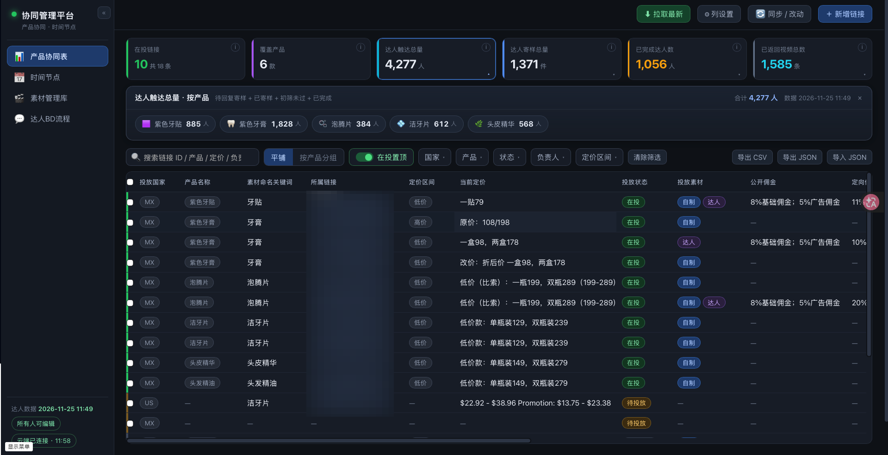
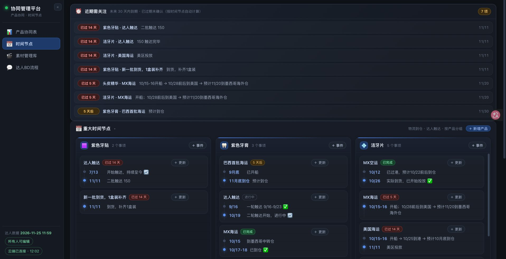
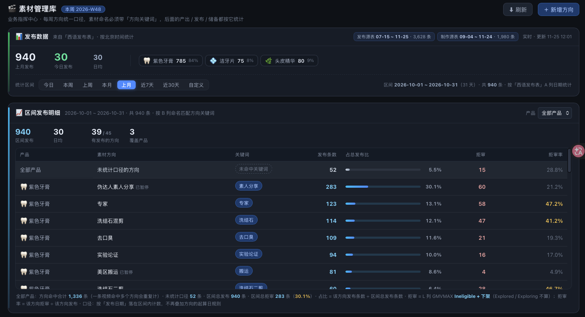
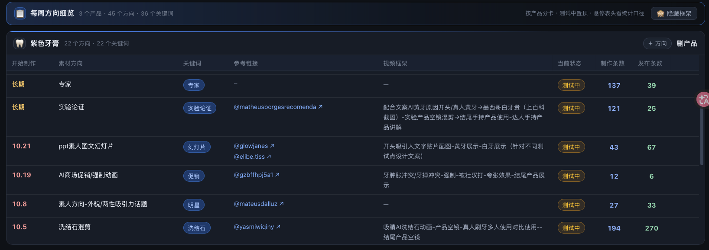
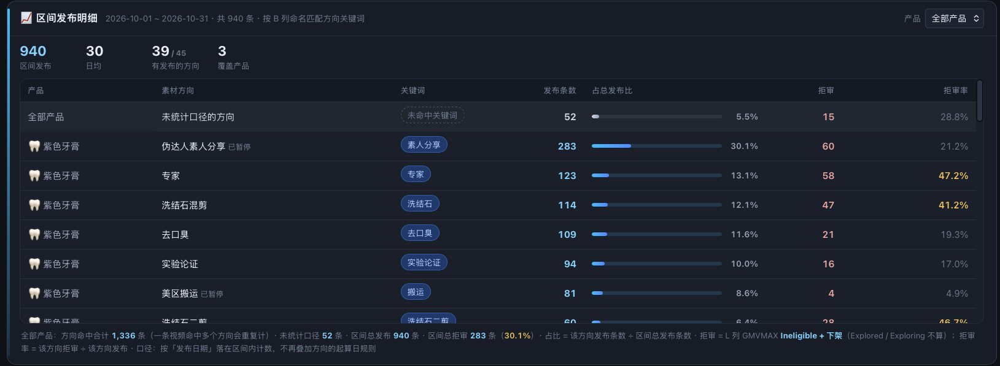
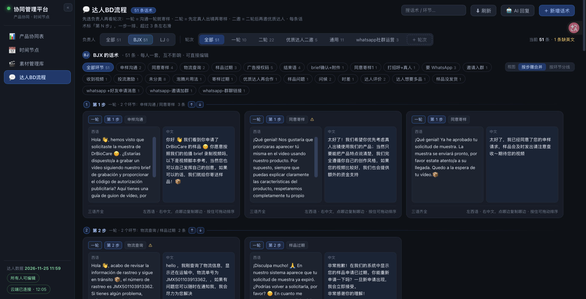

把投放团队散在多张表里的信息收进同一个页面 —— 产品链接、时间节点、素材方向、发布与拒审、达人话术，四个模块各自成体系，又共用同一份底表和同一套权限。
多链接、多信息源汇总到一处 —— 飞书《产品协同表》与《达人库》两张底表同步进来，六个数据维度一屏总览，点开还能按产品拆开看。

按产品、按事项记录时间线 —— 物流到仓、达人触达等节点从文字里自动解析日期，自动判定状态，自动把近期要盯的事挑出来。

团队所有产品的内容信息整合到一处 —— 发布账号、发布内容、素材方向、拒审监控四块连成一条线，从「谁在发」到「发得怎么样」一页看清。
每个产品对应哪些 TikTok 发布账号，集中登记、一点直达。
发了多少、哪个产品在发、发的是哪个方向，按任意时间区间看。

每周方向统一口径 —— 素材命名必须带方向关键词，后面的产出、发布、储备都按它统计。

每个方向的拒审数和拒审率直接摆在发布明细里，问题方向一眼挑出来。

把达人沟通话术按负责人、轮次、环节、步骤排成一条线 —— 每个人一套自己的话术库，贴达人回复还能让 AI 按团队风格生成接法。

技术细节会过时，这几条不会 —— 也是做每一个模块时的判断依据
什么算发布、什么算拒审、达人怎么去重，都先把算法定死再看数字，避免表很好看但对不上账。
四个模块读写的是同一套云端表，产品分类一致，账号清单和素材方向能互相补位。
日期解析、状态判定、拒审率、按方向汇总都交给系统，人只做判断和决策。
功能是否可用必须在真实浏览器看渲染和编辑；数据结论必须逐行核对底表。